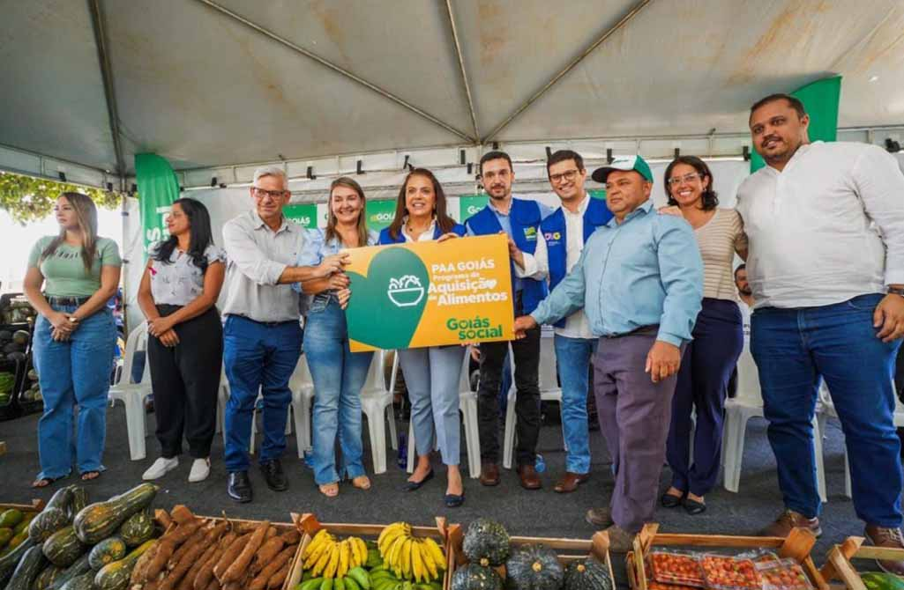

O setor agropecuário é crucial para a economia global, fornecendo alimentos, fibras e matérias-primas essenciais. Este setor abrange desde a produção de grãos e carnes até o cultivo de frutas e vegetais, desempenhando um papel vital no sustento de bilhões de pessoas ao redor do mundo.
Em 2023, a produção global de grãos foi estimada em 2,8 bilhões de toneladas.
A área total dedicada ao cultivo de alimentos é de aproximadamente 1,5 bilhões de hectares.
As exportações de produtos agropecuários atingiram um valor de 1,2 trilhões de dólares em 2023.
O site Notícias Agrícolas é, atualmente, um dos mais importantes meios de comunicação do agronegócio brasileiro.
Com orçamento de R$ 15 milhões, programa do Goiás Social pretende cadastrar mil agricultores familiares, adquirir mais de 3 mil toneladas de alimentos e beneficiar cerca de 150 mil pessoas
Um pacote de ações de apoio à agricultura familiar foi anunciado no final de julho pelo Governo de São Paulo.
*Reportagem exibida em 07/08/2024.